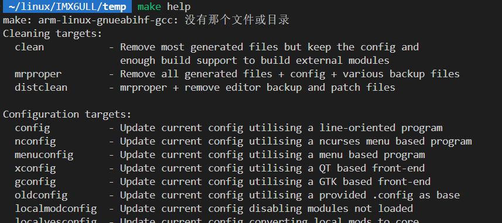

00 Linux内核模块
Linux内核模块
Linux内核本身非常庞大，包含了很多东西，这带了一些问题：
- 许多功能我们可能并不需要，如果每次都把所有东西一起编译了，十分耗时且编译出来的镜像会很大
因此，Linux内核引入了“模块”机制，对于一些功能，它本身不直接编译进内核，而是以模块（.ko）的形式存在内核之外，一旦需要这些功能，可以动态将其加载进内核。一旦被加载，他们就和内核中其他部分没有区别
所以Linux的开发有2种方式：
- 1.将新功能直接编译进内核，这样当Linux内核启动时将自动运行设备驱动程序
- 2.将新功能编译成内核模块
.ko文件，在Linux内核启动后使用相应命令加载驱动模块
通常在调试的时候使用第2种方式，这样在修改驱动时只需要修改驱动的代码，而不用重新编译整个内核并重启
内核模块程序结构
1 |
|
一个Linux内核模块主要由如下几个部分组成:
模块加载函数的定义及注册(
module_init())：当通过insmod或modprobe命令加载内核模块时，模块的加载函数会自动被内核执行，完成本模块的相关初始化工作模块卸载函数的定义及注册(
module_exit())：当通过rmmod命令卸载某模块时，模块的卸载函数会自动被内核执行，完成与模块卸载函数相反的功能模块许可证声明（
MODULE_LICENSE()）:声明描述内核模块的许可权限，如果不声明LICENSE，模块被加载时，将收到内核被污染（Kernel Tainted）的警告模块参数（可选）：模块参数是模块被加载的时候可以传递给它的值，它本身对应模块内部的全局变量。
模块导出符号（可选）：内核模块可以通过
EXPORT_SYMBOL()导出符号（这里的符号指的是函数或者变量），若导出，其他模块则可以使用本模块中的变量或函数。EXPORT_SYMBOL本质是把对应的符号添加到全局的符号表，这样我们单独编译某个.ko模块时，不必链接库文件也可以使用某函数了，这和应用层开发还是有点区别的
模块作者等信息声明（可选）
__init宏的作用
1 |
- 功能：标记初始化函数，告诉内核“此函数仅在模块加载时运行一次”
- 底层原理：
__init是一个宏，展开后是__attribute__((__section__(".init.text")))- 它将该函数编译到内核的
.init.text段（一个专门存放初始化代码的内存区域） - 模块加载完成后，内核会自动释放
.init.text段的内存（节省空间）
__exit宏的作用
- 功能：标记清理函数，告诉内核“此函数仅在模块卸载时运行”
- 底层原理：
__exit展开为__attribute__((__section__(".exit.text")))- 函数被编译到
.exit.text段，如果是可卸载模块（非内置），则保留；如果是内置驱动（编译进内核），则会被丢弃
module_init详解
对于内核的各个功能，他们既可以被编译成模块的形式(.ko)，也可以直接被编译进内核(built-in)。而module_init 和 module_exit 等 API 既用于模块，也用于内置组件，但它们的实际行为会因编译方式而不同。
module_init 是一个宏，它的行为取决于代码是编译为模块还是内置：
对于模块（
\*.ko）：1
2
3
4
5
int init_module(void) __attribute__((alias(#initfn)));- 将初始化函数
initfn绑定到init_module，供insmod调用
- 将初始化函数
对于内置功能：
1
2
3- 将初始化函数指针放入
.initcall6.init节区，内核在链接阶段会收集所有标记为此节区的函数指针，形成一个初始化函数数组 - 内核启动时（
start_kernel()）：会按优先级顺序（如.initcall1.init→.initcall7.init）依次执行这些函数
- 将初始化函数指针放入
1 | //init/main.c |
module_init会把该模块放到优先级6，如果要控制驱动的加载顺序，就得换个宏，放到别的优先级里面！
Makefile写法
Linux内核的Makefile写的非常复杂，完全搞明白很困难，这里只总结一下内核模块开发时经常用到的一些指令
编译成外部模块还是内置
控制某个功能到底编译成模块还是直接内置到内核里面，通过将待生成的模块添加到obj-m或者obj-y来控制
1.编译为.ko*
1 | obj-m := my_driver.o |
-C $(KERNELDIR)：进入到内核的源码目录进行编译，解析顶层的Makefile，编译完成时返回M=$(CURRENT_PATH)：表示在内核中需要被编译的目录，在示例中也就是当前目录modules：内核的编译目标，表示只编译模块（对应obj-m指定的文件）而忽略obj-y指定的文件
2.编译进内核
1 | obj-y := my_driver.o |
make kernel_builtin其实不会直接得到新的Linux内核镜像，只会得到my_driver.o，需要在内核drivers/下的随便某个Makefile加入obj-y += xxxx/my_driver.o，然后重新编译整个内核
这个其实不是标准做法，标准做法是结合Kconfig，并且要把驱动放到内核源码路径下，而不是外部
参考链接：
多文件链接成一个.o
我们在看到内核模块的Makefile时，会发现一个奇怪的东西
1 | obj-m := my_driver.o |
不管是编译成模块还是内置到内核内，假设该模块依赖的是my_driver.o，但是makefile却没有my_driver.o的生成规则，这是因为makefile的隐晦规则预定义了.o文件的依赖为同名的.c文件
但这仅适合单个文件，如果要链接多文件的话，需要用下面的方法
1 | obj-m := complex_module.o |
- ==多文件或非默认命名时==，需通过
<module>-objs或者<module>-y显式声明依赖
递归添加
有的时候会发现makefile还会包含一个目录，这其实是递归编译，如果target是目录的话，会自动执行目录里makefile的内容
1 | obj-y += st_lsm6dsox/ |
预定义目标
不管是Linux、uboot还是buildroot，他们在makefile里都定义了很多预定义目标，通过这些预定义目标，可以进行一些便捷的操作
这些命令通常都是通过make help查看

下面整理一些Linux中makefile定义的常见命令
1 | # 清理$(M)路径下编译产生的中间文件（不影响配置） |
模块的加载
模块的加载可以使用以下2个命令：
insmod：该命令不能解决依赖关系，比如要先加载模块A，再加载B，直接insmod B会出问题modprobe（推荐使用）：该命令会分析模块的依赖关系，将到/lib/modules/$(uname -r)目录查找所有涉及的模块，将其都加入内核- 自动处理依赖关系的能力靠
depmod这个工具，它会扫描/lib/modules/$(uname -r)/目录，并生成或更新modules.dep文件，记录当前内核所有模块的依赖关系提供给modprobe
- 自动处理依赖关系的能力靠
加载完毕后，可以通过
lsmod命令查看系统中存在的驱动模块可以通过
cat /proc/devices查看系统存在的设备
模块的卸载
模块的卸载可以使用以下2个命令：
rmmodmodprobe -r：将同时卸载掉该模块所依赖的模块
模块签名校验
如果编译Linux内核时开了内核模块签名校验，那么在驱动安装之前，需要手动对驱动进行签名操作，不然驱动会安装失败
如何看Linux内核到底看没开驱动签名校验
1 | zcat /proc/config.gz | grep MODULE_SIG |
CONFIG_MODULE_SIG=y：启用模块签名支持CONFIG_MODULE_SIG_FORCE=y：强制所有模块必须签名才能加载CONFIG_MODULE_SIG_KEY="..."：内核自带签名密钥
要进行驱动签名，需要以下准备文件
密钥对：
私钥（Private Key）：用于给模块生成签名，只能被开发者或受信任方持有，一般是
.pem格式公钥（Public Key）：内核用它来验证模块签名，一般是
.x509或.der格式一般放在
/lib/modules/$(uname -r)/build/certs/下
签名工具（由Linux提供）：
- 一般放在路径
/lib/modules/$(uname -r)/build/scripts/sign-file下
- 一般放在路径
准备好后，通过下面指令进行驱动签名
1 | cd /lib/modules/6.1.112-rt43-DR-4.0.4-2510152230-gb381cb-g6c4511/build |
模块加载原理
我们通常使用用户层程序insmod或者modprobe将内核模块加载进内核，现在我们来看一下它的底层原理：
对于模块的动态加载，主要起作用的是sys_init_module这个系统调用，其调用链如下：
1 | 用户命令(insmod / modprobe) |
在系统调用中，内核首先通过load_module解析一个模块，并创建一个模块实例
1 | struct module { |
接着就是要初始化该实例，其中最重要的成员变量是init，它指向读入模块的ELF文件的init_module这个符号。而这个符号，在模块被编译的时候，被替换成用module_init()宏注册的那个函数了
之所以要替换，是因为内核把模块加载函数名写死成
init_module了，而具体的模块代码里，可能不想用这个函数名来命名模块加载函数(比如上面用的是mydriver_init)
符号解析
之前有这样一个问题：模块作为单独编译的一个东西，为什么能直接使用Linux内核提供的其他功能
我们知道各个函数、变量的地址其实都存在ELF文件的符号表里面，只要知道了某个符号的地址，就可以用它了。而内核维护了一个全局的符号表struct kernel_symbol __start___ksymtab，包含所有导出的函数和变量（如 printk, kmalloc）
注册的模块可以动态的导出变量/函数到内核全局的符号表，也可以使用该符号表中的别的变量/函数。从而使得单独编译的模块可以使用内核已有的功能以及对Linux动态扩展